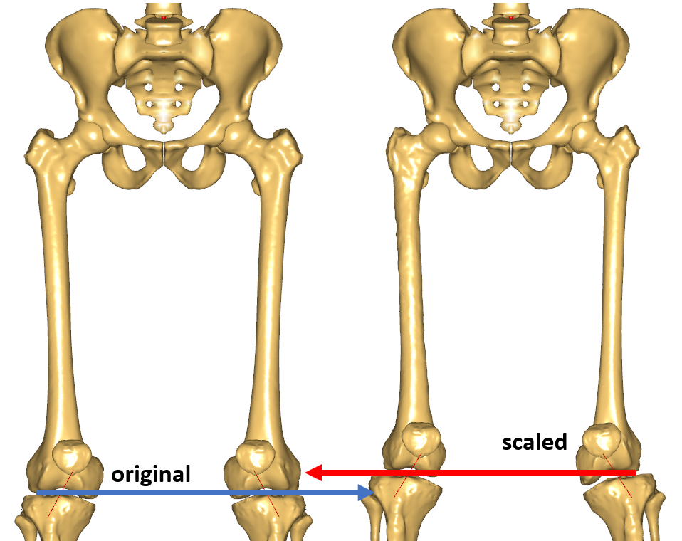

Lesson 2: Including a custom scaling function into your model¶
This lesson explains how we can use our own custom scaling function, which we designed in Lesson 3 and combine it with the overall human body scaling laws.
See also
The section on scaling in the AMMR documentation.
Preparing for subject-specific scaling¶
When creating a musculoskeletal model, we have to decide on the dimensions of the body parts. The Scaling section in the AMMR documentation describes how anthropometric regression equations and body measurements can be used to define these dimensions. However, the most precise models include subject-specific geometries of the bones or morph the underlying template model to take these shapes. To explain how we can include these, let us consider a simple scenario: We have a model of a person who matches the standard size man and we want to perform an inverse dynamics analysis. Additionally, we have the geometry from a CT-scan of one of his left femur. To increase the accuracy of our model, let us improve it using a subject-specific scaling for the femur.
First of all, let us prepare a model matching the standard size man to be the basis for further subject-specific improvements. Therefore we use the model from the first section ScalingStandard, StandingModelScalingDisplay from the AnyBody Managed Model Repository (AMMR). This is well suited to show how to use subject-specific geometry in a model.
Including custom scaling for a single segment¶
Let us configure this example to use ScalingStandard. We need to define
BM_SCALING as _SCALING_STANDARD_ and out-comment all other parts of
the scaling configuration block. With this setting, the model is now scaled to
the generic size. We can now include individual scaling functions for each segment,
which will be done in a special file CustomScaling.any, where all the
modifications related to individual segment morphing are recommended to be done.
This file is already present in the example and you can include it as shown
below:
/*------------- SCALING CONFIGURATION SECTION --------------------*/
// Actual scaling law
#define BM_SCALING _SCALING_STANDARD_
// Scaling laws using joint to joint measures
// #define BM_SCALING _SCALING_UNIFORM_
// #define BM_SCALING _SCALING_LENGTHMASS_
// #define BM_SCALING _SCALING_LENGTHMASS_FAT_
// Scaling laws using external measures
// #define BM_SCALING _SCALING_UNIFORM_EXTMEASUREMENTS_
// #define BM_SCALING _SCALING_LENGTHMASS_EXTMEASUREMENTS_
// #define BM_SCALING _SCALING_LENGTHMASS_FAT_EXTMEASUREMENTS_
// Anthropometric data file (unchanged files can be found in AAUHuman\Scaling\AnyFamily)
// #path BM_SCALING_ANTHRO_FILE "Model\AnyFamily\AnyMan.any"
// #path BM_SCALING_ANTHRO_FILE "Model\AnyFamily\AnyManUniform.any"
// #path BM_SCALING_ANTHRO_FILE "Model\AnyFamily\AnyManExternal.any"
// #path BM_SCALING_ANTHRO_FILE
"Model\AnyFamily\AnyManExtPercentile.any"
// #path BM_SCALING_ANTHRO_FILE
"Model\AnyFamily\AnyWomanExtPercentile.any"
//--------------- END OF SCALING CONFIGURATION -------------------
#include "Model\CustomScaling.any"
#include "<ANYBODY_PATH_BODY>/HumanModel.any"
In case you want to personalize your own model - just copy CustomScaling.any file into the Model folder and follow the instructions from this tutorial.
If we open this file by a double click, we can see that a common place to make modifications has already been prepared. Further, we can find an access point to the geometrical scaling law folder, which will be used to specify individual scaling laws.
// This is a place holder for the inclusion of custom scaling laws
HumanModel.Scaling.GeometricalScaling = {
};
So let us introduce a custom scaling function for the left femur from
Lesson 1. We prepared a single file
MyScalingFunction.any holding the scaling
transforms from the previous lesson. We also need to download the
source (native to AMMR) and
target (courtesy of Prof.
Sebastian Dendorfer, OTH Regensburg, Germany) femur surface
geometries, and copy them to the Model folder of the
StandingModelScalingDisplay example. Now, we need to make several
small adjustments to the scaling law for smooth incorporation into the
model structure.
Starting from the AMMR v1.6.2, individual segment scaling function is implemented in the anatomical reference frame. We will call this frame a scaling reference frame, since there might be several definitions of anatomical reference frames. In general, the segmental frame can be different from the scaling reference frame. The human body model internally handles relevant reference frame changes without needing users to do anything. However, this leads to small modifications needed for the subject-specific scaling function inclusion into the full-body model.
In order to perform the scaling or moprhing in another reference frame – all source entities need to be moved into that reference frame. This can be done using a rigid body transformation to preserve sizes of all objects. In our scaling law (MyScalingFunction.any) the source entities are
- MyScalingFunction.AffineTransform.Points0,
- MyScalingFunction.RBFTransform.Points0,
- MyScalingFunction.STLTransform.Input.SourceSrf.
In the AMMR version 1.6.2 such transformations will be segment dependent and will only be needed for right and left shank and femur as well as for the pelvis. For all other segments this transform can be defined as an identity transformation or does not have to be applied to the source entities. The following transforms can be referenced as TSeg2ScaleFrame, the name that will be used further:
- HumanModel.BodyModel.Left[Right].Seg.Thigh[Shank].Scale.T0
- HumanModel.BodyModel.Trunk.SegmentsLumbar.PelvisSeg.Scale_Trunk_Pelvis.ScaleAfterInterfaceMorphingDef.Scale.T0.
Starting from the AMMR v1.6.3 (corresponds to the AMS v 6.0.3) this transform, TSeg2ScaleFrame, is already defined and can be found in the subfolder of HumanModel.Scaling.GeometricalScaling, which corresponds to the morphed segment and has a similar name. This transform can be easily accessed as demonstrated below and no extra actions are needed.
Let us subject the source entities of the scaling law to the rigid body transformation, TSeg2ScaleFrame. We will need to make the following 3 changes. Please note how we look up out of the MyScalingFunction folder using double and quadruple dots:
AnyFunTransform3DLin2 AffineTransform =
{
Points0 = ..TSeg2ScaleFrame(
{{0.0138187,0.00136731,0.0273618}, // fovea capitis
...
{0.0368766,-0.393677,0.0266919}}); // medial posterior condyle
Points1 =
{{0.289913,0.420538,0.0138931}, // fovea capitis
...
{0.261891,0.47585,-0.372696}}; // medial posterior condyle
Mode = VTK_LANDMARK_AFFINE;
};
...
AnyFunTransform3DRBF RBFTransform =
{
PreTransforms = {&.AffineTransform};
RBFDef =
{
Type = RBF_ThinPlate;
Param = 1;
};
Points0 = ..TSeg2ScaleFrame({
{ 0.0138, 0.0014, 0.0274},
...
{ 0.0010, 0.0013, 0.0069}
});
...
AnyFunTransform3DSTL STLTransform =
{
PreTransforms = {&.RBFTransform};
RBFDef.Type = RBF_ThinPlate;
AnyFixedRefFrame Input = {
AnySurfSTL SourceSurf = {
FileName = "SourceFemur.stl";
ScaleXYZ = {1, 1, 1};
AnyFunTransform3D &pre = ....TSeg2ScaleFrame;
};
As you will see from the following changes the modification simply links the transformations to the folder containing our MyScalingFunction.any file. In our case, this folder is HumanModel.Scaling.GeometricalScaling.Left.Thigh, which corresponds to the name of the segment, we are trying to morph, and contains our TSeg2ScaleFrame rigid body transform.
So finally let us add this scaling function to the model. Please insert the following lines as shown below into the file CustomScaling.any:
HumanModel.Scaling.GeometricalScaling = {
#define CUSTOM_SCALING_Left_Thigh
Left.Thigh = {
#include "MyScalingFunction.any"
AnyFunTransform3D &ScaleFunction = MyScalingFunction.Transform;
};
};
In this modification, we added a pre-processor command (#define) that
notifies the model assembling block that the anthropometric scaling
for the left thigh segment is not being used. To process other body
parts you will need to add a similar definition, but utilize actual
bone segment, e.g. #define CUSTOM_SCALING_<Side>_<SegmentName> for
different sides or CUSTOM_SCALING_<SegmentName> for parts of the
body that do not have sides. You can find a list of segments by
browsing the scaling law in the Model tab:

The other change was to assign the new custom scaling function to be used in the segment of the left thigh instead of the excluded one. If we now comment in DrawExternalMeasures.any and look in the Model View, we can see that the left femur is now shorter and a little thinner than with the standard scaling. So we have now successfully introduced our custom scaling law into the model.

If we worked with a bone that does not have a pair, e.g. vertebrae, skull, etc., or we just wanted to scale a single side with a patient-specific scaling function, we would be finished now and could continue with running the inverse dynamics. But as an exercise, we want to continue and scale the other side as well to ensure symmetry of the model. Normally we would use the patient-specific bones of the other side and copy the code. But in our case only one side is available. We will assume that the body is symmetric, which is typically true up to a certain extent. Thus, we will include a similar scaling for the corresponding mirrored pair. In the next section we will describe how to introduce mirroring to our transformation.
Introducing a mirrored custom scaling function¶
We start by making a copy of MyScalingFunction.any that will be used to
construct the mirrored transform and call it MyScalingFunction_Mirrored.any.
What we have to do is to define a symmetry plane and reflect relevant
entities accordingly. In this example such plane corresponds to the
global XY plane. To perform the reflection, we need to multiply all
relevant landmark points contained in the MyScalingFunction_Mirrored.any
file by a mirroring matrix:
AnyFolder MyScalingFunction_Mirrored = {
AnyMatrix AMirroring = { // XY plane symmetry
{1,0,0},
{0,1,0},
{0,0,-1}
};
...
AnyFunTransform3DLin2 AffineTransform =
{
Points0 = ..TSeg2ScaleFrame({...} * .AMirroring);
Points1 = {...} * .AMirroring;
Mode = VTK_LANDMARK_AFFINE;
};
...
AnyFunTransform3DRBF RBFTransform =
{
...
Points0 = ..TSeg2ScaleFrame({...} * .AMirroring);
Points1 = {...} * .AMirroring;
...
};
}; // MyScalingFunction§_Mirrored§
After mirroring the landmarks, we have to think about the surfaces which were also used in the construction of this transform. So we have to reflect them too. This can be done easily by just changing the ScaleXYZ members of the input surfaces of the AnyFunTransform3DSTL class:
AnyFolder MyScalingFunction_Mirrored = {
...
AnyFunTransform3DSTL STLTransform =
{
PreTransforms = {&.RBFTransform};
RBFDef.Type = RBF_ThinPlate;
AnyFixedRefFrame Input = {
AnySurfSTL SourceSurf = {
FileName = "SourceFemur.stl";
ScaleXYZ = {1, 1, -1};
AnyFunTransform3D &pre = ....TSeg2ScaleFrame;
};
AnySurfSTL TargetSurf = {
FileName = "TargetFemur.stl";
ScaleXYZ = {1, 1, -1};
};
};
SurfaceObjects0 = {&Input.SourceSurf};
SurfaceObjects1 = {&Input.TargetSurf};
//FileName0 = "SourceFemur.stl"; // such definition was used previously
//FileName1 = "TargetFemur.stl"; // such definition was used previously
NumPoints = 400;
BoundingBox.ScaleXYZ = {2, 2, 2};
BoundingBox.DivisionFactorXYZ = {1, 1, 1};
BoundingBoxOnOff = On;
};
...
}; // MyScalingFunction_Mirrored
Finally, we have to include the mirrored scaling into the model exactly the same way the left thigh scaling was included:
#define CUSTOM_SCALING_Left_Thigh
#define CUSTOM_SCALING_Right_Thigh
Left.Thigh = {
#include "MyScalingFunction.any"
AnyFunTransform3D &ScaleFunction = MyScalingFunction.Transform;
};
Right.Thigh = {
#include "MyScalingFunction_Mirrored.any"
AnyFunTransform3D &ScaleFunction = MyScalingFunction_Mirrored.Transform;
};
Now the right and left thigh are morphed using the custom scaling functions. When we load the model and look at our Model View, we can see that the model looks symmetric again and, compared to the standard scaling model, the bones look smaller. We can also see this in the following image where the model changed from the standard scaling case (left) to the custom scaling one (right):
This concludes the subject-specific scaling tutorial. The modifications
utilized for the mirrored transformed model can be downloaded from here:
Downloads/MyScalingFunction_Mirrored.final.any
 Please report it here...
Please report it here...{kind=link}